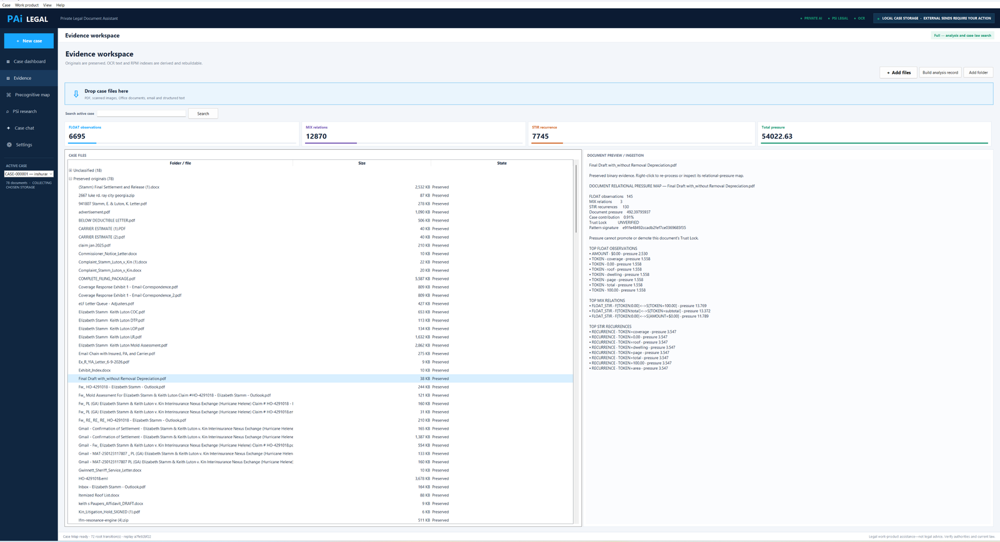

Legal document OCR and case file indexing, start to finish
Every file you drop in goes through the same five stages. The original is never altered, and nothing the software cannot read cleanly is allowed to pass quietly.
1. The original is preserved first
Before anything is read, the file is copied into the case folder you chose and kept byte for byte. Everything after this point — extracted text, indexes, relations, analysis — is derived, which means it can be thrown away and rebuilt from the original at any time. If an extraction improves in a later version, you rebuild; you never lose the source document.
Accepted on the way in: PDF, scanned images, Word and other Office documents, email files, plain and structured text.
2. Text extraction, by the right tool for the file
Native PDF text
PDFs that already carry a text layer are read directly, with page and position kept so every sentence can be pointed back to the page it came from.
Word and Office documents
Word files are unpacked and read from their document structure rather than screenshotted — paragraphs, tables, headers and footers come across as text, so a table of line items stays a table.
Scans and photographs — Tesseract OCR
Anything with no text layer goes to Tesseract, the open-source OCR engine, which ships inside the program. Nothing is sent to a cloud OCR service. Scanned exhibits, faxed carrier letters and photographed pages become searchable text on your machine.
OCR is where quality problems live, which is why the next stage exists.
Message files are read for header, body and attachments, and the attachments are ingested as documents in their own right, still tied to the message they arrived in.
3. Structural indexing

Extracted text is indexed as relational structure, not as a blob: observations, the relations between them, and how often each pattern recurs. This is the layer that makes a case searchable and mappable, and it is computed by rule — the same file produces the same index every time, with a signature to prove it.
4. Nothing is guessed, and nothing fails silently
There is no AI in the extraction path at all. Every document is read by a declared method — pdf-text, pdf-text+tesseract, docx, xlsx, eml, tesseract-ocr — and the method is recorded with the document along with its page count and how many of those pages needed OCR. You can always see how a page became text.
The OCR decision is made by rule, not by judgement: a PDF page carrying fewer than forty characters of real text is treated as scanned and rendered at 2.5× before Tesseract reads it, because a page holding nothing but a stamp and a page number is a scan whatever the file says. If a page needs OCR and the OCR runtime is missing, ingest stops with an error naming the page. It does not import an empty document and let you find out in a filing.
Unsupported types are refused by name rather than half-read. The header carries a live OCR indicator so you know before you drop 300 files whether the runtime is there.
5. Contradictions surface at analysis, and you resolve them
When the same claim appears under two different Trust Locks, the software shows you the tension. It does not pick a winner.
Cross-checking happens where the evidence meets the case, not at the moment a file is read. When analysis finds the identical claim carried at two different verification levels — one document treating it as established, another as unverified or contradicted — that tension is listed for you, with both sources. Resolving it is a decision a person makes and the case records.
The same principle runs through the rest of the workspace: a conflict check screens party names and says plainly that it is a screening aid and not a clearance; a filing preflight reports mechanical omissions and states that it is not a legal-sufficiency determination. The software is built to hand you a decision, not to make it quietly.
Where the AI is, and where it is not
- It is not in extraction. Text comes from the document's own structure or from Tesseract, never from a model reading a picture and describing it
- It is not in classification. A document's role is resolved from its filename and its opening text by rule, and the text wins when the two disagree
- It does not resolve a tension between two claims — a person does
- It does not send anything anywhere; when a model is used at all, it runs locally on this machine
- Ingest, indexing, classification and the case map all complete with no model installed